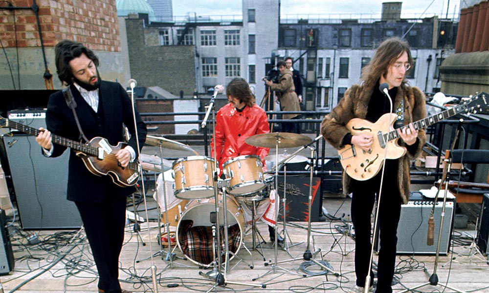
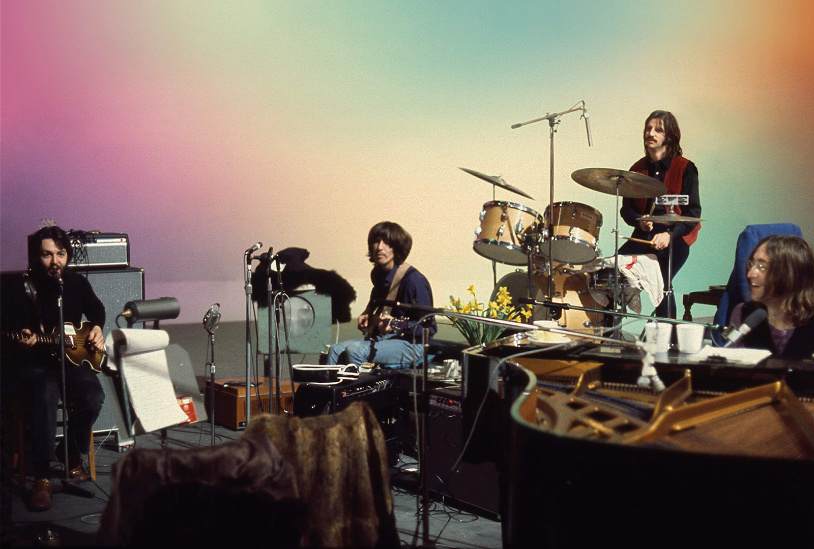
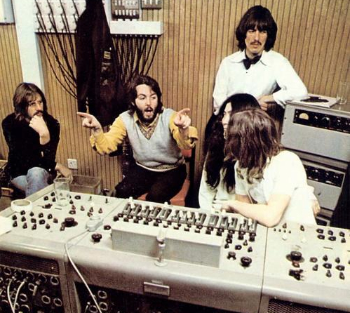
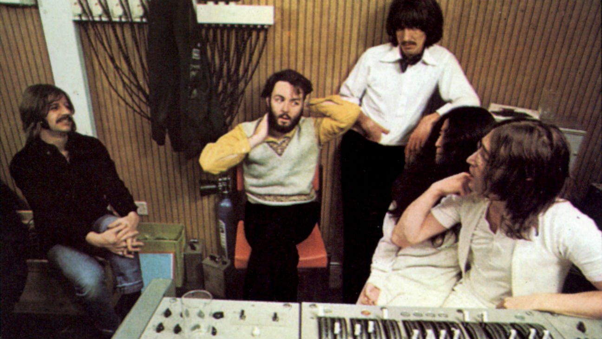
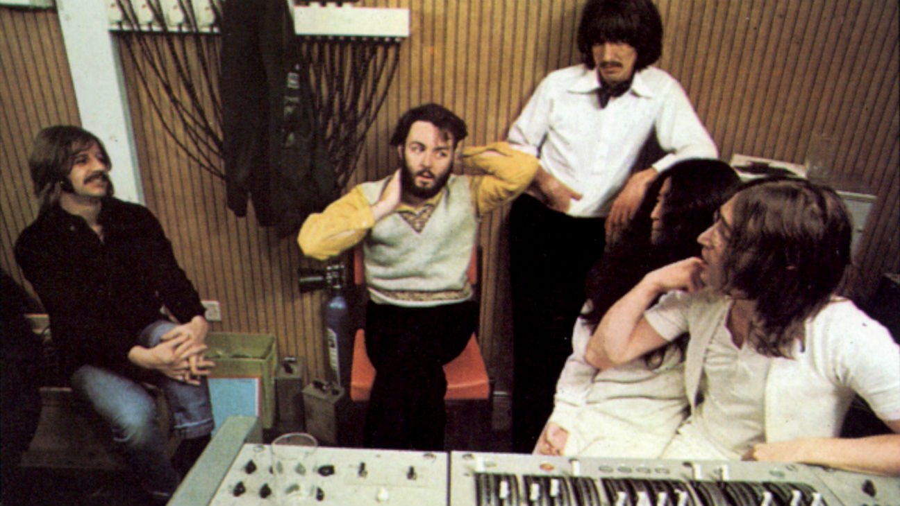

Let It Be
Let It Be adalah album ke-12 sekaligus album studio terakhir yang dirilis oleh The Beatles. Album ini dirilis pada tanggal 8 Mei 1970 oleh Apple Records tak lama setelah The Beatles mengumumkan pembubarannya.
Sebagian besar lagu di album Let It Be direkam pada bulan Januari 1969, sebelum perekaman dan perilisan album Abbey Road. Untuk alasan ini, beberapa kritikus dan penggemar seperti Mark Lewisohn berpendapat bahwa Let It Be adalah album kedua dari belakang. Let It Be awalnya dimaksudkan untuk dirilis sebelum Abbey Road pada periode pertengahan 1969 dengan judul Get Back, tetapi The Beatles tidak puas dengan versi ini, yang dimix dan dikompilasikan oleh Glyn Johns dan untuk sementara waktu dikesampingkan. Versi yang baru dari album tersebut diciptakan oleh Phil Spector pada tahun 1970 dan akhirnya dirilis dengan judul Let It Be, yang menjadi latar belakang film tahun 1970 yang berjudul sama. Sebelum perilisan album, ada tiga lagu yang sebelumnya direkam dan dirilis sebagai singel, yaitu "Get Back"/"Don't Let Me Down" dan "Let It Be". Spector meremix dan memasukkan singel-singel itu ke dalam album, terkecuali "Don't Let Me Down".

Daftar lagu
sisi pertama
- Two of Us
- Dig a Pony
- Across the Universe
- I Me Mine
- Dig It
- Let It Be
- Maggie Mae
sisi kedua
- I've Got a Feeling
- One After 909
- The Long and Winding Road
- For You Blue
- Get Back
Walaupun mendapat komentar yang beragam dari majalah Rolling Stone pada saat perilisannya, album ini diletakkan di peringkat 86 oleh majalah itu dari 500 album terbesar sepanjang sejarah pada tahun 2003.[1]
Let It Be... Naked dirilis pada tahun 2003, sebuah versi alternatif yang ‘’menelanjangi’’ album dari hasil kerja Phil Spector dan menggunakan variasi dari beberapa lagu-lagu.

The Beatles: Get Back (November 2021)
The Beatles: Get Back adalah serial dokumenter tiga bagian yang akan datang yang disutradarai dan diproduksi oleh Peter Jackson. Ini mencakup pembuatan album 1970 The Beatles Let It Be, yang memiliki judul kerja Get Back, dan diambil dari materi yang awalnya diambil untuk dokumenter album tahun 1970 Michael Lindsay-Hogg. Awalnya dibuat sebagai film fitur, setiap episode The Beatles: Get Back berdurasi sekitar dua jam, dengan total enam jam.
Jackson mencirikan The Beatles: Get Back sebagai "sebuah film dokumenter tentang sebuah dokumenter". Para komentator menggambarkannya sebagai keyakinan lama yang menantang bahwa pembuatan Let It Be sepenuhnya ditandai oleh ketegangan antara The Beatles, menunjukkan sisi produksi yang lebih optimis. Ini akan tayang perdana di Disney+ berturut-turut pada tanggal 25, 26 dan 27 November 2021.
Pada 17 Juni 2021, diumumkan bahwa The Beatles: Get Back akan dirilis sebagai serial dokumenter tiga bagian di Disney+ pada akhir pekan Thanksgiving tanggal 25, 26 dan 27 November 2021, dengan setiap episode berdurasi sekitar dua jam. Rilis ini didahului dengan penerbitan buku dengan nama yang sama – buku resmi pertama yang dikreditkan ke band sejak The Beatles Anthology (2000) – yang menampilkan pengantar Hanif Kureishi. Buku ini awalnya dijadwalkan pada 31 Agustus 2021 bertepatan dengan rilis awal film dokumenter tersebut pada bulan Agustus, tetapi akhirnya dirilis pada 12 Oktober, menjelang film dokumenter tersebut. Dokumenter ini juga didahului dengan perilisan remix, edisi deluxe box set dari album Let It Be pada 15 Oktober oleh Apple Records.
Konflik antar beatle
Sesi latihan dan rekaman album tidak berjalan mulus. Ketidakakuran yang dimulai sejak masa rekaman album White Album pada tahun lalu kembali menciptakan masalah. Hubungan mereka menjadi dingin. Lennon dan McCartney pun tidak bekerja sama lagi. McCartney mengambil alih peran sebagai ketua, sementara Lennon lebih suka menghabiskan waktu di studio dengan Yoko Ono, yang berada di dekatnya sepanjang waktu. Hal ini mengakibatkan keretakan dalam grup ini. Akhirnya, Harrison keluar dan berhenti dari sesi rekaman setelah bertengkar beberapa kali dengan McCartney dan sekali dengan Lennon dikarenakan McCartney terlalu perfeksionis dan Lennon tidak lagi menaruh perhatian pada grup. Harrison kembali beberapa hari kemudian setelah dibujuk. Versi film memperlihatkan banyak pertengkaran di antara mereka dan sering kali disebut sebagai film dokumenter yang mempertontonkan proses pembuatan sebuah album selain "perpecahan sebuah grup musik".
*foto ini hanya sebuah gambaran
⬅ Album sebelumnya Menu
 
